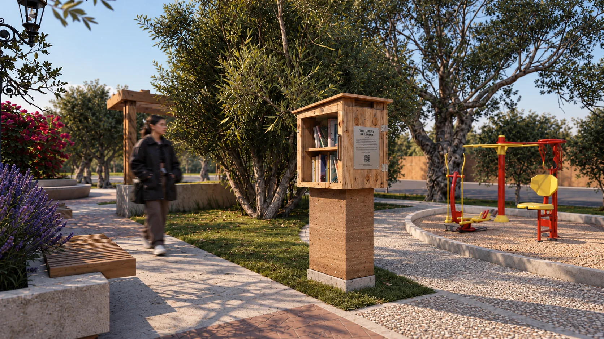

- Type
- Social architecture
- Location
- Querétaro, Mexico
- Year
- 2026
- Height
- 1.46 m
- Status
- Under construction
- Process
-
- Idea
- Transformation
- Matter
Idea
THE URBAN LIBRARIAN was born as ARQUEMIST.’s own initiative to bring knowledge, culture and the exchange of ideas closer to the everyday life of communities.
The project starts from a simple reflection: a book can hold a story, a philosophy or a different way of understanding the world, but its true value multiplies when someone decides to share it.
Unlike traditional reading and lending spaces, where access to books usually comes with conditions of use and return, THE URBAN LIBRARIAN proposes an open and voluntary relationship with reading. Anyone can leave a book, take another, return it after reading it or keep it. There is no obligation of an equal exchange; the system rests on trust and the will to share.
Its name reinterprets the figure of the librarian. Here, there is no person in charge of recommending books or managing the collection: the architectural module itself takes on that role. A small urban structure that brings knowledge closer to people and lets them freely decide what to discover.
The proposal understands architecture as an intermediary between strangers. Whoever leaves a book shares something of themselves —their interests, their ideas, their emotions— with someone they will probably never meet.
In this way, a small-scale object takes on a collective dimension. THE URBAN LIBRARIAN does not only seek to encourage reading, but to foster indirect encounters, awaken curiosity and recover trust as part of the experience of public space.
An architecture that shows that the smallest gestures can also build community.



Process
The project began with the intention of developing an accessible, replicable, low-material-impact intervention, able to fit into a public space without relying on large-scale cultural infrastructure.
The choice of wood reclaimed from construction sites responds to a strategy of reusing resources, giving a second life to materials that might otherwise be thrown away.
The module has openings on two of its faces, protected by acrylic panels, so the books can be reached from both sides. This functional decision also takes on a symbolic meaning: knowledge has no single entrance and no single way of being discovered.
The compacted earth base reinforces the relationship between the object and its surroundings. The bookcase is conceived as an element that emerges from the ground, establishing a material connection with the earth and with the idea of a shared origin.
To achieve this expression, a support system was developed using a central wooden core that extends from the body of the bookcase down to its foundation. A metal plate connects this element to a shallow reinforced-concrete footing, providing the anchorage needed to hold the module.
The compacted earth wraps the structural core on every side, hiding the support system and letting the bookcase be perceived as a piece that grows directly out of the ground.
An information plaque includes a QR code that tells the story of the module’s creative process and construction. In this way, the intervention also shares its own history, making visible the architectural work behind it.
Beyond its construction, THE URBAN LIBRARIAN raises a question about the role of architecture in society: how much can a space transform when its purpose is not only to be used, but to create bonds between people?
Technical data
- Type
- Social architecture / Urban design / Community intervention
- Dimensions
- 1.46 m high
- Materials
- Reclaimed construction wood, acrylic, reinforced concrete, steel and compacted earth.
- Construction system
- Wooden structural core anchored by a metal plate to a shallow reinforced-concrete foundation, wrapped all around with compacted earth.
- Visualizations
- ARQUEMIST.
- Credits
- ARQUEMIST.

“Architecture reaches its greatest value when it stops talking about buildings and starts talking about people.”